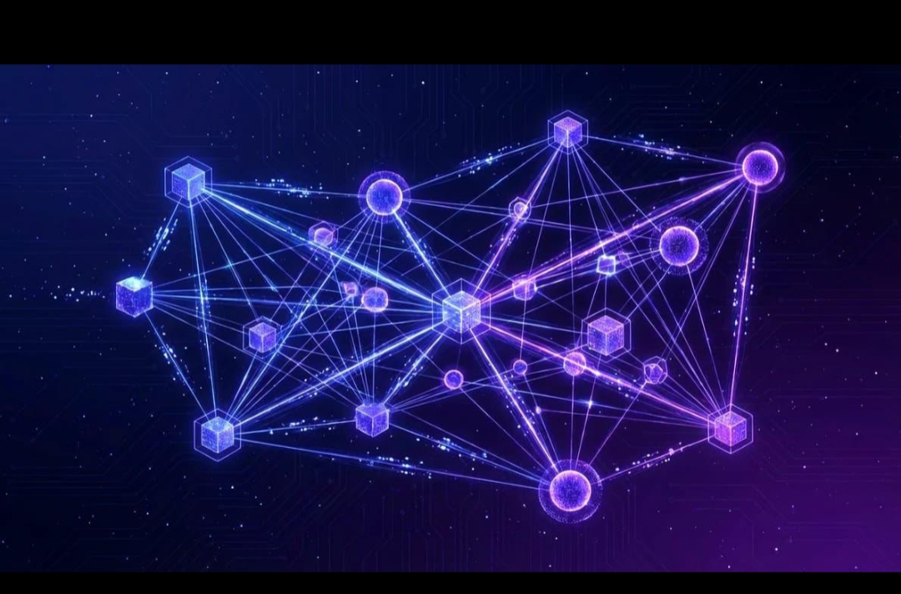

01
Multi-Asset Liquidity
Explore liquidity connections between digital assets and projects, with an emphasis on transparency and responsible development.
LIQUIDITY ↗Connecting projects, digital assets, and emerging utilities through a growing multi-asset ecosystem on the GRAM network.
GBTC is a multi-asset liquidity ecosystem designed to connect diverse blockchain projects, utility tokens, and digital services.
Our vision is to support collaboration between projects, explore practical on-chain applications, and create opportunities for sustainable growth across an evolving digital landscape.
Designed to bring different projects and digital utilities into a connected environment.
Explore liquidity connections between digital assets and projects, with an emphasis on transparency and responsible development.
LIQUIDITY ↗A framework for bringing diverse blockchain initiatives together and exploring new opportunities for collaboration.
ECOSYSTEM ↗A forward-looking approach to practical Web3 services, digital applications, and future utility integrations.
UTILITY ↗GBTC aims to explore opportunities across multiple areas of the digital economy as the ecosystem develops.

Official GBitcoin information and smart contract address on the GRAM network.
EQBGazkIch4zHGmUsU-YHHTtC860ZjmAb6GKGQpjG5lZ4kJB
Always verify the contract address before interacting with the token.
Our roadmap represents a direction for development. Individual milestones may evolve over time.
Establish the project identity, core vision, and ecosystem structure.
Research potential liquidity connections and opportunities with digital projects.
Evaluate practical services, integrations, and possible applications.
Explore multi-chain opportunities as the ecosystem and its capabilities mature.
Exploring liquidity, utility, and sustainable growth in the evolving digital economy.
Back to Top ↑